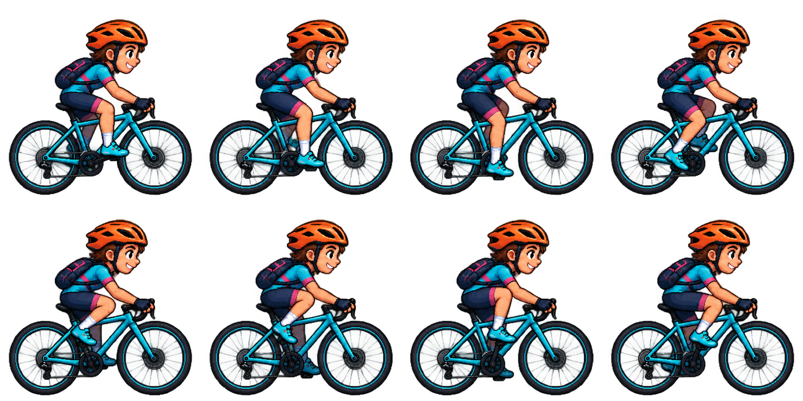
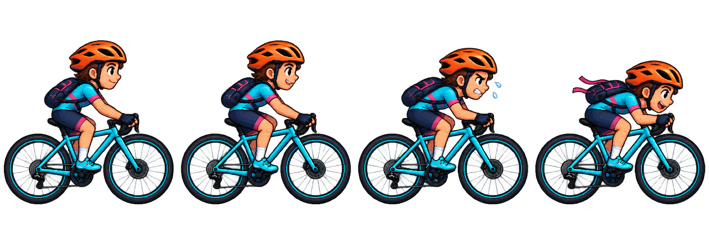

Huit poses de pédalage et quatre attitudes. Vérifie le mouvement, la taille et la silhouette.
La cadence anime les jambes.La vitesse déplace la route.


Prototype visuel local · aucune connexion à un capteur.